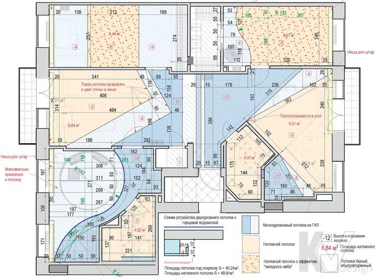

План потолков

Спочатку дизайнер розробляє кілька варіантів плану стель і розміщення освітлювального обладнання, причому крім побажань замовника враховується технічна необхідність опусканий стелі, наприклад, для монтажу вентиляції або кабельного кондиціонування, установки точкових світильників. Підсумковий концепт створюється за результатами обговорень, коригувань та зауважень, і включає в себе вже два креслення - власне план стель і окремий план освітлення.
На плані стель обов'язково вказуються вживані матеріали з прив'язкою до призначення конкретного приміщення або конструктивними особливостями будівлі, відзначаються основні рівні стельових конструкцій, а також даються розрізи з деталізацією складних елементів. У цьому ж кресленні враховуються і різні дизайнерські рішення, на зразок дзеркал, розписів або вітражів.